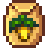
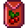
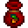

Stardew Valley es un videojuego indie de simulación de granja desarrollado por Eric "ConcernedApe" Barone y publicado por Chucklefish Games (actualmente por ConcernedApe). El juego se lanzó en primer lugar para Windows el 26 de febrero de 2016, y luego para los sistemas operativos OS X y Linux.
En Stardew Valley, el jugador toma el rol de un personaje que se encuentra atrapado en un trabajo de oficina y para escapar de él se va a vivir a la granja de su abuelo, la cual se encuentra en ruinas. La granja se encuentra ubicada en un lugar llamado Pueblo Pelícano. El jugador controla las acciones del personaje, utilizando energía al realizar acciones como regar los cultivos o minar, entre muchos otros. El tiempo y la energía utilizada para realizar las acciones dependiendo del nivel que el personaje cuente en dichas actividades, las cuales aumentan con el tiempo al repetir la tarea una y otra vez.

El juego también cuenta con un carácter social al poder relacionarse con los vecinos del lugar y lograr entablar una amistad e incluso contraer matrimonio con algunos de los personajes solteros del juego.

Stardew Valley es un juego de simulación de granja. Al principio del
juego, el jugador crea su personaje, pudiendo elegir el sexo del mismo,
color y tipo de cabello, entre otros.
El jugador recibe la granja en ruinas que alguna vez poseyó su abuelo. El
lugar entero se encuentra lleno de maleza y árboles, y la única estructura
disponible es la vieja casa del abuelo.
La tarea del jugador es limpiar la tierra para poder cultivarla y ganar
dinero, éste junto con otros materiales le permitirán construir otros
tipos de edificios para criar animales o construir máquinas que
transforman la materia prima.

| nombre | tipo | dias para crecer | estacion | precio |
|---|---|---|---|---|
 chiviria |
tubérculo | 4 dias | primavera | 35 G |
 fresa fresa
|
baya | 8 dias* | primavera | 120 G |
 arandanos arandanos
|
baya | 13 dias* | verano | 50 G |
| carambola | frutas | 13 dias | verano | 750 G |
 girasol girasol |
planta | 8 dias | verano u otoño | 80 G |
 melon melon |
frutas | 12 dias | verano | 250 G |
 calabaza calabaza
|
vegetal | 13 dias | otoño | 320 G |
| carambola | frutas | 13 dias | verano | 750 G |
|
 grosella |
bayas | 7 dias* | otoño | 75 G |
|
 gema dulce |
baya | 24 dias | otoño | 3000 G |
| fruta milenaria | bayas | 28 dias* | primavera,verano u otoño | 550 G |